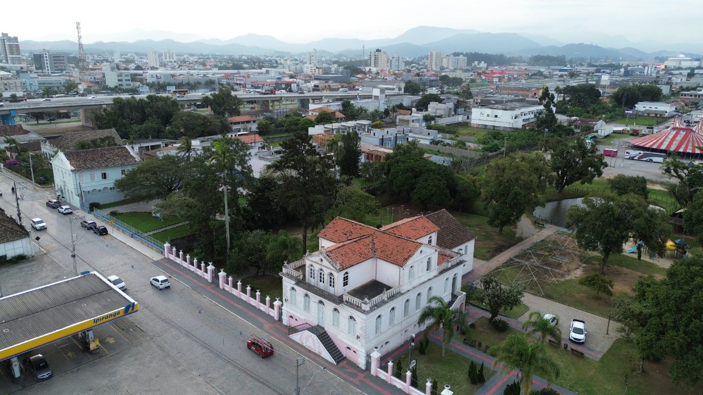

Tijucas · Mobilidade
Tijucas · MobilidadeTijucas começa a sondar o solo para projetar a terceira ponte sobre o Rio Tijucas
A outra frente grande que a cidade vizinha tem em andamento.
A obra é da J.S. Construções e precisa começar em até dez dias úteis. Neste ano o serviço mexe só na parte de fora do imóvel.
Em 30 segundos · Modo de Leitura, formato original Santa Informa
A Prefeitura de Tijucas assinou nesta segunda-feira, dia 24, a ordem de serviço para reformar o Casarão Gallotti.
O serviço é de pintura externa e reparos na estrutura do imóvel.
O investimento é de R$ 106.991,78.
A empresa contratada é a J.S. Construções Ltda.
Os trabalhos precisam começar em até dez dias úteis e o prazo de execução é de 60 dias.
Em 2026, a obra fica só na área externa. A parte interna está prevista para 2027.
Para 2028, a cidade prevê implantar um Mercado Público na área dos fundos do casarão.
O prédio recebe atividades culturais e comunitárias ao longo do ano.
Poder PúblicoPublicada em Redação Santa Informa

A Prefeitura de Tijucas assinou nesta segunda-feira, dia 24, a ordem de serviço para a pintura externa e os reparos no Casarão Gallotti, que a Administração Municipal trata como um dos principais patrimônios históricos e culturais da cidade. O investimento é de R$ 106.991,78.
A empresa contratada é a J.S. Construções Ltda. Pela ordem de serviço, os trabalhos precisam começar em até dez dias úteis e têm prazo de execução de 60 dias, contados a partir da emissão do documento. O serviço é de pintura externa e de reparos necessários na estrutura do imóvel. Neste ano, a intervenção fica restrita à área de fora.
A Prefeitura informa que as intervenções na área interna estão previstas para 2027. O casarão não é só fachada bonita: o prédio recebe atividades culturais e comunitárias ao longo do ano, e a conservação aparece na nota como jeito de manter o espaço em uso e não só em pé.
Existe um terceiro passo anunciado. Para 2028, Tijucas prevê implantar um Mercado Público na área dos fundos do Casarão Gallotti. A ideia declarada é ampliar o uso e a valorização daquele espaço, que hoje gira em torno do prédio histórico. A iniciativa é tocada pela Administração Municipal junto com a Fundação Cultural Tradição de Tijucas.
Tijucas é vizinha da Costa Esmeralda, divide a mesma BR-101 e recebe o mesmo fluxo de quem sobe e desce o litoral no verão. Quando uma cidade da região arruma um prédio histórico e planeja mercado público no terreno de trás, ela cria motivo para o visitante parar em vez de passar. E o valor chama atenção pelo outro lado: R$ 106.991,78 é pouco perto do que custa um quarteirão de asfalto. Patrimônio às vezes sai mais barato do que a conversa faz parecer, desde que a manutenção venha antes do estrago.
A Prefeitura não informou de onde sai o dinheiro desta etapa, nem quanto devem custar a fase interna de 2027 e o Mercado Público de 2028. Também não há data marcada de início, apenas o limite de dez dias úteis a partir da emissão da ordem de serviço.
O resumo de 30 segundos está no topo e a versão completa é o texto acima. Aqui ficam as três leituras da casa sobre o mesmo assunto.
O resumo de 30 segundos está no topo e a versão completa é o texto acima. Aqui ficam as três leituras da casa sobre o mesmo assunto.
Clara, a otimista
Casa velha bem cuidada é a memória da cidade continuando de pé. Tijucas está fazendo o mais difícil, que é gastar com conservação antes de o telhado cair. Sai muito mais barato assim, e o prédio segue servindo para as atividades da comunidade.
E gostei do encadeamento. Fora em 2026, dentro em 2027, mercado público nos fundos em 2028. Tem começo, meio e fim escritos, com o espaço ficando mais vivo a cada etapa em vez de virar museu fechado.
Seu Prudêncio, o criterioso
Merece atenção o que a nota deixou de fora. Não se sabe a origem do recurso, e em obra de patrimônio isso importa, porque convênio estadual ou federal costuma vir com exigência técnica de restauro que dinheiro próprio não tem. Pintura externa em imóvel histórico não é pintura comum: tinta errada em parede antiga sela a umidade e apodrece a alvenaria por dentro.
Vale acompanhar também a sequência escolhida. Mexer na parte de fora antes da parte de dentro é discutível quando a infiltração vem do interior, e o texto não informa qual é o estado da estrutura. Sessenta dias é prazo curto, o que sugere serviço de conservação, e não restauro. Se for isso mesmo, tudo bem, desde que a Prefeitura diga com essas palavras.
Dito isso, a decisão vai na direção certa. Manutenção regular custa uma fração do que custa recuperar prédio arruinado, e o valor contratado mostra exatamente isso. Anunciar as três etapas de uma vez também é postura boa: dá para a cidade cobrar o calendário em 2027 e em 2028 com o anúncio na mão.
Caco, o sarcástico
Cento e seis mil reais para pintar o casarão. Em Tijucas isso não compra nem a varanda de um apartamento de frente para o rio, mas dá para deixar o patrimônio inteiro apresentável.
Em 2026 pintam por fora, em 2027 entram, em 2028 fazem o mercado nos fundos. É cronograma de reforma de brasileiro, só que assinado e publicado.
E o mercado público fica atrás do casarão. Ou seja, a cidade vai finalmente descobrir o que tem no quintal daquela casa.
Fontes: Prefeitura de Tijucas, publicação de 24 de agosto de 2026, com a assinatura da ordem de serviço, o valor de R$ 106.991,78, a contratação da J.S. Construções Ltda., o prazo de 60 dias e o limite de dez dias úteis para o início, a divisão entre área externa em 2026 e área interna em 2027, a previsão do Mercado Público para 2028 e a menção à Fundação Cultural Tradição de Tijucas. Sobre a outra obra grande da cidade, veja a matéria da terceira ponte.
Tijucas · MobilidadeA outra frente grande que a cidade vizinha tem em andamento.
 Itapema · Cultura
Itapema · CulturaComo a cidade vizinha está aplicando dinheiro em cultura neste ano.
 Itapema · Cultura
Itapema · CulturaPatrimônio e tradição virando calendário de visitante na região.